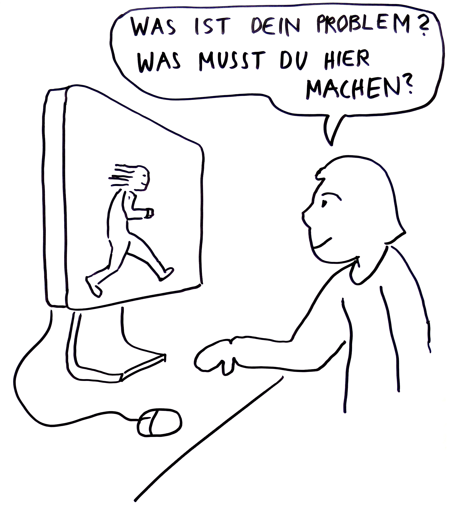
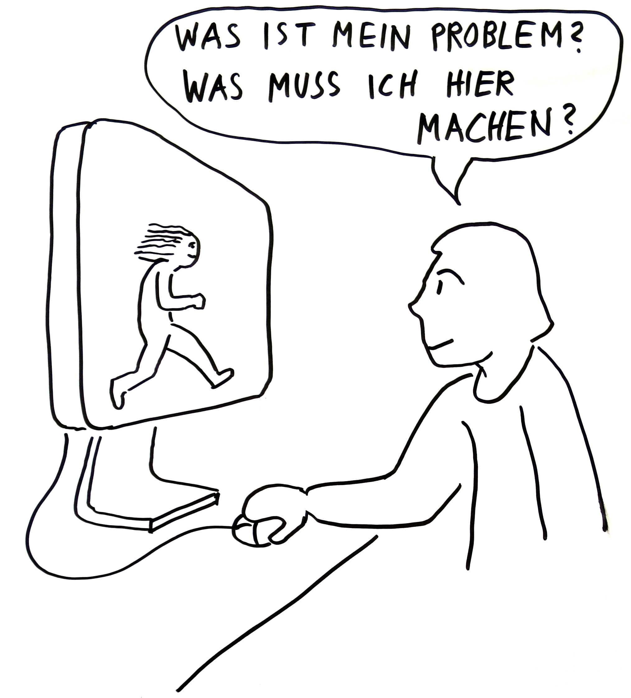
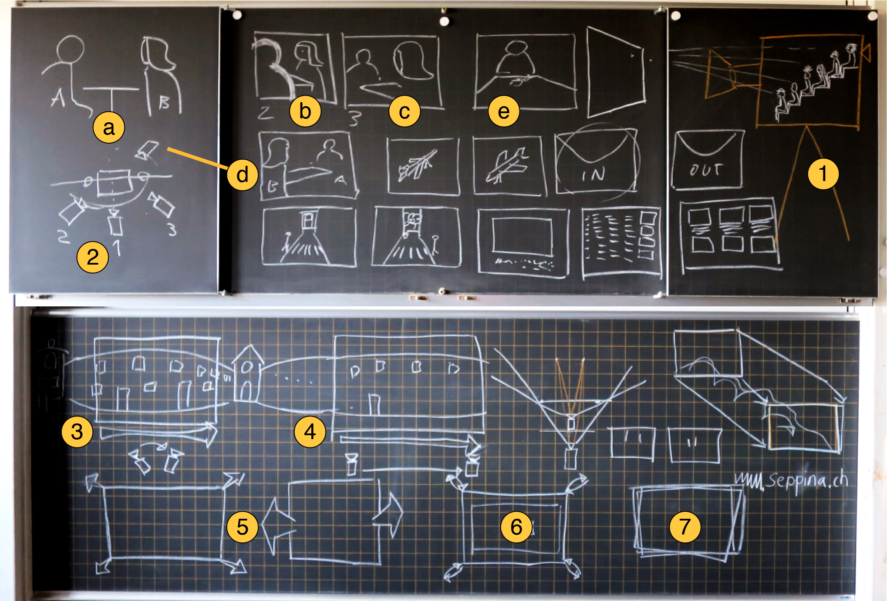

Einleitung
Was ist Experimentelles Erzählen für mich?
- Erzeugt unterschiedliche Reaktionen
- Interpretationsspielraum
- Improvisation
Wo begnet man ihr?
- Comedy
- Hazel Brugger (Poetry-Slam, sehr monoton, satyrisch)
- Duo ohne Rolf (stumm, mit Typografie und Mimik)
- Musik
- Rap
- Reime
Unterricht
Geschichten Generieren
Internetli
Als begrüssung in der Stunde durfte jeder etwas der Klasse preisgeben im Spiel Internetli. Von Basil selbst erfunden.
Es funktioniert so:
Jede Person schreibt ein Wort oder Satz auf einen Zettel der mit einem zu tun hat. Danach stellt er sich wortlos damit vor die Klasse. Die Klasse beginnt dann darüber zu reden, Fragen zu stellen und Vermutungen aufzustellen. Die Person vorne darf sich bei allen Kommentaren nichts anmerken lassen. Erst wenn die Mitschüler finden sie wissen nicht mehr was sagen kann die Person Auflösung und die richtige Geschichte oder Fakten zum geschriebenen geben.
Sinn des Spiels:
Bei diesem Spiel geht es darum, dass man hinterfragt, was man von sich Preis gibt – speziell im Internet! So schnell verbreiten sich dort Sachen und man weiss gar nicht was die Leute davon halten. Bei diesem Spiel geht es darum dass die fehlende Rückmeldung im Internet gleich vor Ort stattfindet.
Menschliche Kamera
Als zweite Aufgabe mussten wir uns in Gruppen aufteilen. Innerhalb der Gruppe suchte man nach Bildern/Motiven. Wenn einer ein gutes Sujet fand nahm man eine andere Person bei der Hand. Diese musste die Augen schliessen bis der andere sie richtig positioniert hatte. Dann konnte man die Augen öffnen und musste sich das Bild das vor einem war merken. Wie eine Kamera also. Mit den Bildern im Kopf ging es dann los diese in kleine Dias reinzuzeichenen. Mit den entstandenen Bildern der Gruppe musste man eine Geschichte zusammenstellen und Text dazu generieren. Zurück im Schulzimmer tauschten dann jeweils zwei Gruppen, ganz wichtig nur die Bilder aus. So musste dann auch eine 2. Gruppe zu den selben Bildern einen Text generieren. Am Schluss verglich man die verschiedenen Geschichten die entstanden miteinander. Spannend wie es manchmal ziemlich gleich und manchmal total anders gesehen wurde.
Die Aufgabenstellung


Die entstandenen Geschichten – die zweite von meiner Gruppe
Unsere Geschichte xxxx

Dramaturgie und Epilog

Wichtig bei einer Erzählung
- Erwartungshaltung/brechen
- Überraschung vs. Spannung
- Geben + Nehmen
- Voraussicht Vorankündigung
- Pflanzen(sähen) + Ernten (nicht zu weit her geholt)
- Dramatik + Epik
- Ensemble

Aufbau einer nicht experimentellen Erzählung
- Exposition (man lernt die Figuren kennen)
- Konflikt
- Auflösung
Dramatik
- down
- up
- down
- Up
- Usw.
Prolog/Epilog
????
Krimi
Fängt mit dem Ende an. Auflösung kommt durch die Erzählung. Es wird mit dem Whodunit (Who done it?) gearbeitet.
Interaktives Erzählen
Beispiel: Kasperli das Publikum redet mit der spielenden Figur.
Online Erzählung, Interaktion
Wichtig bei Websites
- Navigation nicht verstecken!
- Orientierung
- awwwards.com --> gute Beispiele als Inspiration
- nicht zu überladen
- Aufforderung etwas zu machen --> interaktiv
- 1 Klick --> 1 Aktion oder Reaktion
- Belohnung für User
- Mehrwert Mitbestimmung/Produkt
- Ziel
Interaktion zwischen Mensch und Maschine – Passiv und Aktiv
 Storyboard
Was muss man sich bei einem Storyboard alles überlegen? Nicht nur die Handlung selbst sondern auch Sachen die für das Produzieren des Filmes wichtig ist. z.B.: Wie schwenke ich die Kamera, von welcher Seite Filme ich, Winkel usw.
- Überlegung zu den Kameraeinstellungen oder Bewegungen:
- Das Publikum, ein ganzer Kinosaal, "sitzt" in der Kamera und schaut durch das selbe Fenster auf die Szene, die Filmhandlung.
- Auf welchen Punkt der Leinwand/ des Bildschirmes sind die Augen gerichtet?
- Von welcher Seite schauen wir auf die Handlung? (Achsensprung / 180-degree rule / crossing the Line)
- a. Kamera 1 zeigt einen Zweier, zwei Personen in einer Szene.
- b./c. Zeigt die Szene jeweils über die Schulter einer Person.
- d. Bei dieser Einstellung ist die Kamera über die Handlungsachse gesprungen: Das Publikum verliert eventuell die Orientierung.
- e. Frontal: Die Kamera ist direkt auf ein Gesicht, auf ein Objekt gerichtet.
- Subjektive Einstellung: Aus der Sicht einer Figur gefilmt, Point-of-View-Shot.
- Kameraschwenk: Das Publikum bleibt am Ort und schaut dem Geschehen nach (vertikal: Neigen)
- Kamerafahrt: Das Publikum fährt mit dem Geschehen mit: Parallelfahrt oder vertikal: Kranfahrt.
- Zwei mögliche Storyboard-Darstellungen für eine Kamerarückfahrt auf der Z-Achse.
- Zolly (Kamerafahrt mit gegenläufigem Zoom)
- Darstellung für eine Aufnahme mit Handkamera oder Steadicam.
Wechseln wir beim Filmschnitt die Blickseite auf das Geschehen und überspringen dabei die Handlungsachse / Kameraachse können Bildfolgen eventuell schwerer gelesen werden.
Projekt
Aufgabenstellung
Rohmaterial für eine Erzählung wird auf einem Schifffahrtsausflug generiert. Später soll daraus eine komplette Geschichte entstehen. Es darf sich durchaus während dem Herstellungsprozess ändern, da es ja ein experimentelles Projekt ist. Als Resultat kann ein Film, Spiel, Installation oder sonstiges entstehen.
Ideenbörse für Projekt/Gruppenbildung
Nun waren wir an der Reihe uns eine Art des Geschichten generieren und erzählen auszudenken. Basil gab uns als Vorlage eine Schifffahrt die wir das nächste Mal besuchen würden. Wir trugen die Ideen zusammen und bildeten je nach gleicher Idee verschiedene Gruppen. Ich landete in einer 4er Gruppe. Zusammen wollten wir mit allen Erzählebenen arbeiten: Bild, Video, Audio, Gestik und ein klein wenig Text zur Unterstützung der anderen Medien. Wir überlegten uns wie wir auf der Schifffahrt die Zeit nutzen werden. Somit beschlossen wir dass ich mit dem Audiogerät aufnehme, Nadia und Tiö fotografieren und Natascha filmt. Die Gestik und den Text wollten wir im Nachhinein generieren je nachdem wie unser gesammeltes Material wird. Bei den Aufnahmen von Ton und Bild wollten wir einfach mal möglichst viel Material sammeln. Trotzdem beschlossen wir uns auf Gegensätze wie laut/leise oder ruhig/nervös zu konzentrieren.
Unsere Idee
Interpretation und Wahrnehmung: bekanntlich ist das Empfinden eine ganz persönliche Sache. Was passiert aber, wenn wir bewusst und forciert für Verwirrung Sorgen? Wie fällt die Interpretation aus, wenn wir gegensätzliche Elemente in eine Aussage vermischen. Wie wirken Bild und Audio aufeinander. Das eine funktioniert auch ohne das andere. Was macht es aber für einen Unterschied? Interpretation und Wahrnehmung: wie wirken statische Bilder, bewegte Bilder und Töne auf verschiedene Weise kombiniert? Daraus entsteht vielleicht die Diskussion: «Wieso ist das so?». Interpretation und Wahrnehmung: bekanntlich ist das Empfinden eine ganz persönliche Sache. Was passiert aber, wenn wir bewusst und forciert für Verwirrung sorgen? Wie fällt die Interpretation aus, wenn wir gegensätzliche Elemente in eine Aussage vermischen? Eine banale Schiffs-Reise? Vielleicht, oder vielleicht das Gegenteil. Auf dem Schiff finden so viele Welten und Wahrnehmungen wie Menschen die sie mitbringen Platz: einen Mikrokosmos, wann man so will. Hier sind gegensätzliche Geschichten, die zwar in der selben Zeit passieren, aber meist getrennt und parallel nebeneinander funktionieren zu finden. Was, wenn wir damit spielen und sie nicht mehr parallel und getrennt laufen lassen, sondern willkürlich mischen? Bildern, Töne und Gestik, mit gegensätzlichen oder genau die selben Aussagen prallen somit aufeinander, in angenehme oder verwirrenden Mischungen.
Technische Hilfsmittel
Videokamera, Tonaufnahmegerät, Smartphone, Fotokamera, Mac, iMovie (für Filmmontage)
Vorgehen, Prozess, einfache Zeitplanung
- Material sammeln bei der Schifffahrt: Audio, Video, Foto
- Materialauswahl: Aufteilung in zwei Kategorien, ruhig und nervös
- Vier Themen in der Gruppe aufteilen und ausarbeiten: 1. Mensch, 2. Wasser+Objekte, 3. Stimmung, 4. Spannung
- Jedes Mitglied der Gruppe entwickelt einen Filmabschnitt bestehend aus Audio, Film und Fotos. Es entstehen 4 Kurzfilme.
- Im Plenum: Story zusammenstellen, Wording wählen um die Botschaft zu unterstützen
- Aufnahmen von einem Satz in Gebärdensprache. Der Satz wird am Ende noch als Text eingeblendet.
- Video Montage und Schnitt pflegen
- Intro mit verschiedenen Impressionen erstellen
Schifffahrt
Material erzeugen
Auf der Schifffahrt suchen wir nach Bildern, Videos und Geräusche die nach Gegensätzen – laut/leise, ruhig/hektisch, angenehm/gefährlich – eingeteilt werden können. In einem späteren Zeitpunkt wird ein Satz in Gebärdensprache aufgenommen und in vier Abschnitte geteilt. Mit dem zusammengetragenen Material kann die Story entwickelt werden: wie werden Bilder (Foto/Video), Audio und Gebärdensprache gemischt, um das gewünschte Resultat zu erzeugen? Als Ergebnis sollte ein Film – in verschiedene Abschnitte unterteilt – entstehen. Jeder Abschnitt wird von einem Mitglied der Gruppe realisiert und vertont. Die Montage wir im Plenum gemacht. Das Resultat wird nicht eine in sich fertige Geschichte sein, mehr eine Dokumentation über das Interpretieren und Wahrnehmen verschiedener Impressionen. Was wir wollen ist «etwas» in den Raum werfen: Fragen, oder sich fragende Leute da stehen lassen. Die Lösung liegt beim Betrachter.
Vorgehen
Nach dem Sammeln des Materials machten wir uns ans sortieren der vielen Audio-, Foto- und Filmdateien. Wir beschlossen dass wir nach zwei Gruppen sortieren. Ruhig und Nervös. Nach dem sortieren aller Daten begannen wir für unseren Film Unterthemen zu bestimmen damit sich jeder an einen Teil machen konnte. 4 Untergruppen bildeten sich.
"Kleine" Stories
- Wasser: Tiö
- Leute: Nicole
- Schiff/Objekte: Natascha
- Gefahr/Bedrohlich/schnell/Bewegung(Spannung): Nadia
Ausführung
Jeder machte sich nun an das Zusammenschneiden eines Kurzfilmes. Die Gegensätze Ruhig und Nervös sollten darin natürlich sichtbar werden. Durch Sequenzen mit Ton oder ohne und solche Ohne Bilder dafür mit Audio soll der Interpretation des Zuschauers grossen Spielraum gelassen werden.
Zusätzliches Material
Alle haben ihren Kurzfilm erstellt und nun geht es ans zusammensetzen zu einem Ganzen. Es ergibt sich für uns alle eine sinnvolle Reihenfolge um eine Geschichte zu formen. Um aber die Filme zu unterstützen und gewisse Pausen zwischen den einzelnen Sequenzen zu haben bauen wir noch Szenen mit Gebärdensprache ein. Die Gebärdensprache stellt einen Satz dar, der das ganze ein wenig erklären soll. Ganz am Schluss des Filmes bringen wir den Satz noch ausgeschrieben.
Fertigstellung des Kurzfilms
Feintuning
Nun werden alle Übergänge genau definiert. Die Zeiten angepasst und Farbkorrekturen vorgenommen. Ein Blick über den Video zeigt uns das es noch ein Intro braucht. Wir beschliessen verschiedene Impressionen von der Schifffahrt in Form von Fotos ganz schnell nacheinander laufen zu lassen. Danach eine kurze Pause - Schwarz bis der Titel erscheint "Chaos?" und unsere Filme beginnen.
Endprodukt
Unser Kurzfilm ist fertig! Mit 4.5 Minuten entspricht er auch unserer Vorstellung. Wir sind gespannt auf die Reaktionen der Mitschüler an der Präsentation. Werden sie die Geschichte gleich interpretieren wie wir? Verstehen sie überhaupt was der Film aufzeigen soll oder ist es ein totales Chaos?
Präsentation
Fragen vor der Präsi: genügen die gewählten Mittel um das Experiment verständlich zu machen? Reaktionen: wie kann man Bilder wahrnehmen? Was empfinden verschiedene Betrachter? Und vielleicht wieso?
Reaktionen der Mitschüler
Wie gedacht waren die meisten total verwirrt. Einige hat es sogar ein wenig überfordert. Wenige verstanden aber unsere Absicht mit den verschiedenen Erzählebenen zu spielen und Chaos zu generieren. Basil war sehr überzeugt vom Film und fand es spannen wie wir auch mit bewegt Bildern ohne Ton und keine Bilder aber mit Ton gespielt haben. Manchmal ist es gar nicht aufgefallen dass was ins unserer Sicht "gefehlt" hat.
Rückblick
Ich fand unser Projekt sehr spannend. Vorallem da es sich durchs Arbeiten entwickelte. Wir haben gezielt nie genaue Schritte festgelegt um vorzu schauen zu können was passt. Für mich ist der Kurzfilm auf jedenfalls gelungen. Er ist spannend auch für uns welche wissen was er beinhaltet.
Fazit
Eine Erzählung kann von jedem Betrachter anders wahrgenommen werden. Wie wird unsere Kurzgeschichte wahrgenommen? Schon jeder von unserer Gruppe hatte andere Interpretationen für das gleiche Geschehen. Beim ganzen Prozess ist dies sehr deutlich geworden: Genau das war aber der Plan! Uns wurde hier ganz bewusst wie bei den verschiedensten Sachen Unsicherheit, Gelassenheit, Zufriedenheit und weiteres auftauchen kann. Ist nun das Experiment gelungen? Das ist eine Sache der Interpretation. Wir finden schon... oder vielleicht auch nicht.